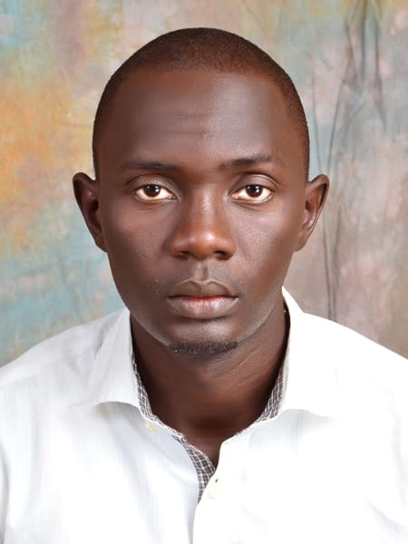

Sajil Sani
Frontend Lead
ID NumberDL/IMT/23D/0120
Level400
ProgrammeInformation Management Technology
I am Sajil Sani from Hong LGA, Kilba by tribe. A student from MAU with registration number DL/IMT/23D/0120, studying Information Management Technology, 400 level. I'm dedicated to my studies and passionate about technology.